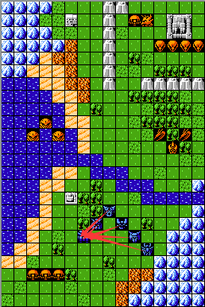
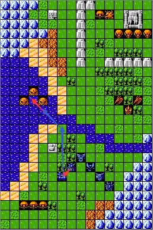
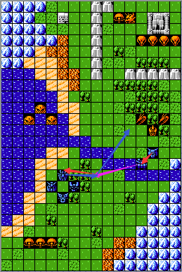
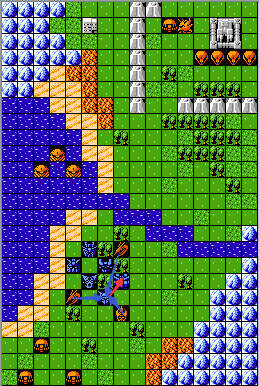

1.回复HP：母舰的搭载回复与加血站的效果一致，均为30%的回复量，但是母舰的搭载是可以公用的，多机体搭载均享受回复效果，回复效果在我方行动阶段开始生效。

2.辅助赶路站位：利用母舰相对于搭载机体的类型优势（空）或者机动优势将其运送到需要的战略布局位置，如图所示：

如左图所示，不借助母舰，高达如果想在第二回合攻击到海里的三个敌方单位，因为受到地形机动补正的影响，只能移动到红色箭头所示的位置，无法在第二回合攻击到敌方单位,此时需要借助精神疾风才可达到目的；而对于右图所示借助母舰的情况，首先在第一回合高达搭载于母舰，母舰移动至第一个蓝色箭头所示位置，在第二回合母舰移动至第二个蓝色箭头所示位置，那么高达可以通过“起飞”移动至第二个红色箭头所示位置攻击任意一个相邻的敌方单位，这在一定程度上提高了站位效率，在改版中运用较多。
3.换位分抗中转：此时母舰是作为一个移动加血站来为我方单位提供补给，同样用母舰本身的机动性给机体以中转。

假设在第一回合爱美神A、冲浪者、白色基地是处于如左图所示的位置，残血冲浪者无法在第一时间得到回复，此时可以选择母舰作为中转回复点，第二回合达到第二个蓝色箭头所示位置进行回复；对于爱美神A而言，通过自身的移动力无法达到第二个红色箭头所示的位置，此时需要通过母舰中转，在第一回合搭载，母舰移动至第一个紫色箭头所示位置，在第二回合移动至第二个紫色箭头所示位置对上面三个敌方单位进行反击。对于右图而言，残血的爱美神A可通过母舰的搭载，然后通过母舰的移动，在第二个回合可以移动至左边红色箭头所示的加血站位置，对于冲浪者而言，可通过母舰的中转再次回复HP，在第二回合移动至第二个蓝色箭头所示的位置再次对上面三个敌方单位进行反击。总的来说，母舰就是起到一个中转回复的作用，理解起来比较抽象，自己多尝试应该就不难看懂了。
4.接收弱势单位转移仇恨：可以将受到较大仇恨的弱势机体搭载于母舰，将仇恨转移至我方其他机体。如下图所示：

由于爱美神A是弱势单位（防卫低），假设三个敌方单位的智商中的基础判定方式中的次优先级判定是以使自己输出伤害最高为优先级的，那么必然会攻击爱美神A，此时爱美神A无论移动至哪个位置都会受到攻击，此时可以选择搭载于母舰转移仇恨至其他机体，避免受到较多伤害而坠落。